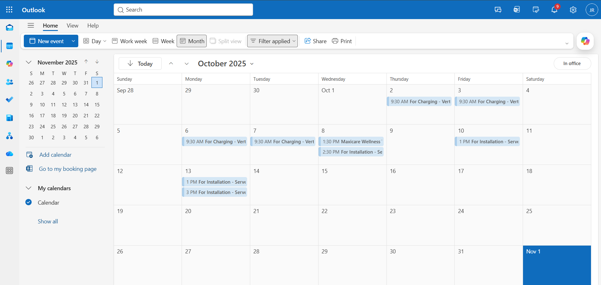

Project Overview
This project demonstrates my ability to manage executive scheduling,
appointment coordination, and activity tracking using a structured
calendar management system.
Operational Problem
Service appointments, charging schedules, and installation activities
needed proper coordination to avoid time conflicts, missed schedules,
and inefficient technician deployment.
Solution
- Organized service schedules using a centralized calendar system
- Scheduled charging activities for UPS units
- Planned installation appointments with exact time allocation
- Maintained structured event labeling for quick reference
- Ensured proper spacing between service operations
Process Implementation
- Created structured calendar events for each service activity
- Assigned clear event titles and time blocks
- Coordinated technician schedules for installations
- Tracked service operations per day and week
Results & Impact
- Improved schedule visibility for service operations
- Reduced scheduling conflicts
- Better coordination of charging and installation activities
- More organized service workflow
Project Preview
Preview of the structured service scheduling calendar.

View Calendar System